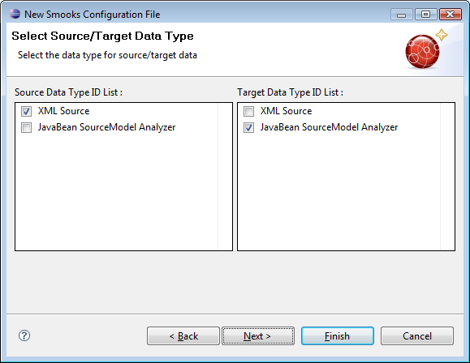
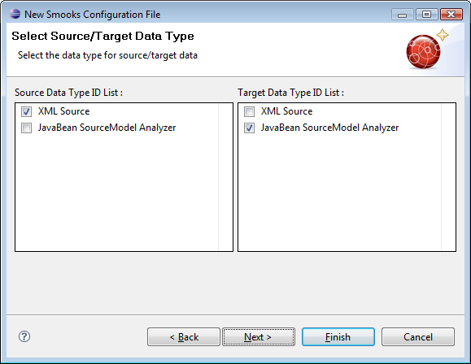

Smooks
There is now a source page in the Smooks editor

There is now a Smooks wizard for creating a .smooks file

Smooks |
|
| Source |
There is now a source page in the Smooks editor
|
|
|
|
| Smooks wizard |
There is now a Smooks wizard for creating a .smooks file  |